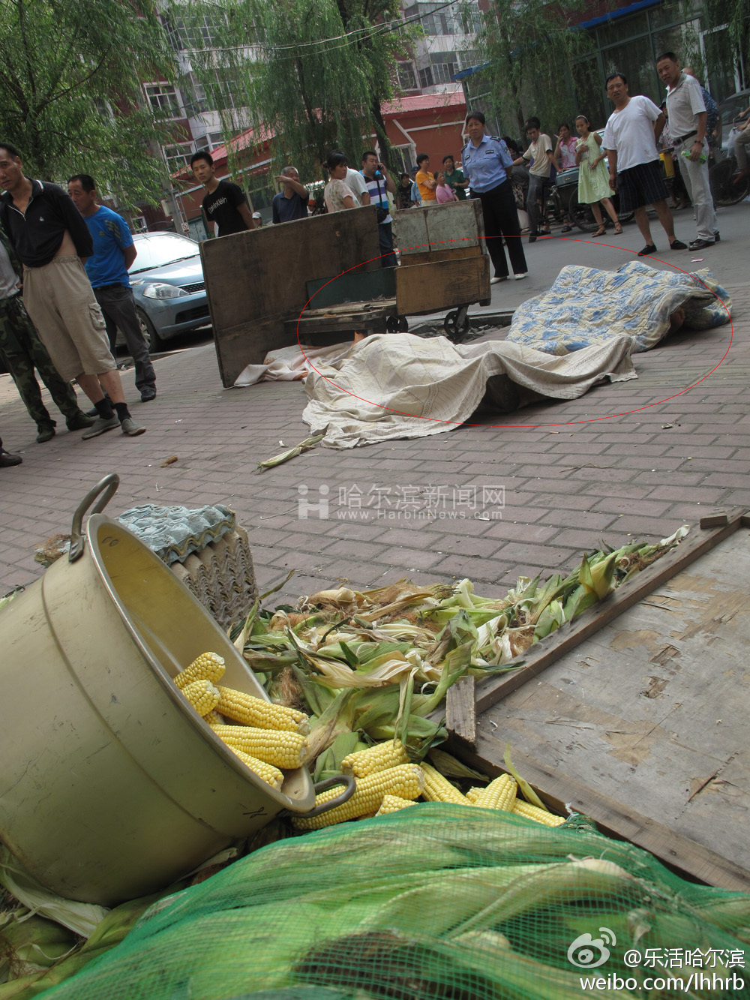

三忧文明城市，你懂的，我不是打错字了是故意的@乐活哈尔滨:哈尔滨怎么了呢，连小区的市场都封锁了，水果蔬菜无处买，平时吃饭的包子铺，面馆，坛肉等小吃都大铁门见客，门口站着服务员，吃饭的被请进去之后，再关上，平时热闹繁华不见了，听说要持续一个星期。via@@迷茫诱惑 
刚和同学吃完饭回来，一个童鞋是两年前见到的，一个是毕业以后再也没见过的，五年了，一起聊天的话题还是那么多，感谢我的同学，感谢生活，虽然今天白天不是很开心，但是见到大家以后，真的是欢乐开怀，讲讲上学的事儿、说说现在的生活，友谊就是如此，喝再多也不觉得有什么不妥，希望大家一些切安好。